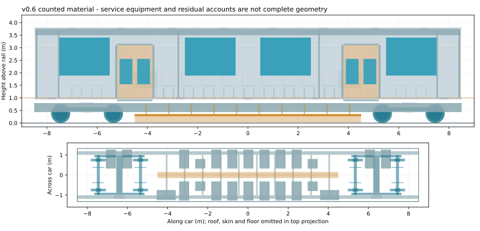
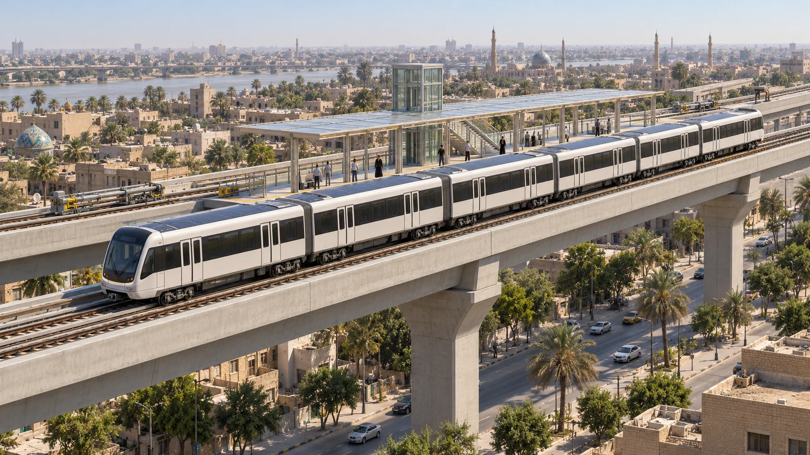
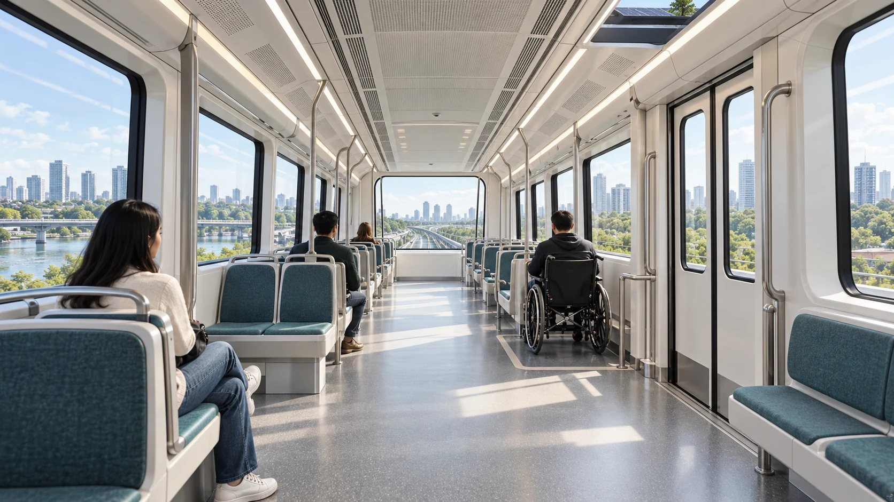
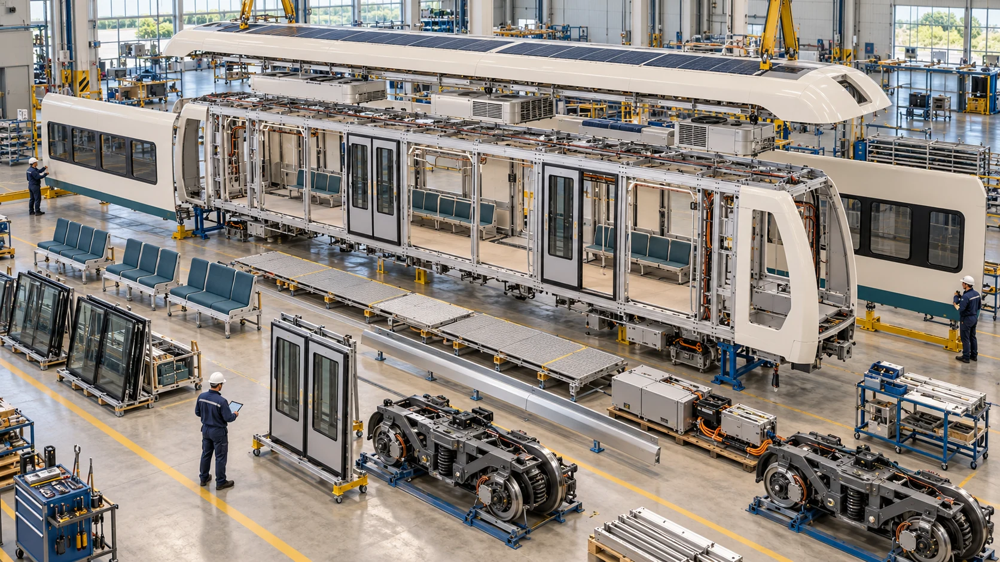
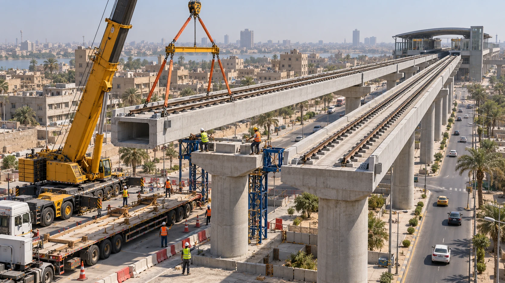
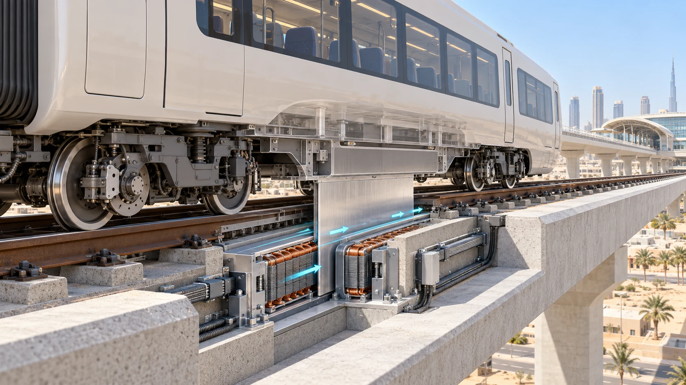

OpenSourceRail aims to retain design authority, manufacturing, software, integration and maintenance capability in-country. It connects three products: a design and delivery platform, reference railway hardware and factories, and open GoA4 controls. Low whole-life cost, local value added, repairability and repeatable construction are objectives, not established savings.
The selected research configuration is station-powered freewheeling wheel rail. It has 6 cars of 17 m, each with 44 fixed seats and 2 wheelchair places, and no planned standing. Passive bogies run on conventional rails carried by precast concrete. Station double-sided LIMs act on passive onboard aluminium secondaries; normal-service traction motors, traction batteries and suspension magnets are absent from the train.
The targets are 72 km/h, 120-second headway and 35-second dwell. Capacity arithmetic gives 8,280 passengers/hour/direction, not a demonstrated protected service. Auxiliary batteries, HVAC, doors, independent brakes, onboard ATP, station-led supervision and recovery remain necessary. Passengers transfer between fixed lines; depot switching is a separate exception to the no-mainline-switch policy.

Partial stock geometry and equipment accounts, not a complete installed or approved train.
These five supplied illustrations show the intended railway, passenger experience, local assembly and construction. They are concept artwork. Dimensions, equipment placement, accessibility and construction details require controlled engineering records; the images do not establish physical performance or qualification.

A wheel-supported train on conventional rails beside an elevated station, with roof solar panels and a platform canopy.

A bright seated cabin with a wheelchair space beside the doors. Detailed seat counts, boarding clearances and restraints require the controlled layout.

Workshop assembly concept showing the body, roof, glazing, doors, seating and bogies as separate assemblies.

Illustrated precast-beam erection above an urban corridor. Lifting arrangements, temporary stability and site protection need their own engineered plans.

Passive wheel bogies support the car while station-side double-sided LIM primaries act on a passive aluminium fin. Blue arrows illustrate the propulsion concept.
The lifecycle is plan, design, procure, manufacture, construct, commission, operate, maintain and renew. ERPNext/Frappe HR retains business, workforce, procurement, quality and maintenance functions. FUXA and the gateway retain observations, alarms, history and review-linked lifecycle records. The planning workspace retains local city/service editing and exports over historical packets; its v0.6 compilation is unconnected. These services require configured roles, masters, device bindings and reviewed imports; the engineering Workbench does not automatically commission them.
The coordinated design experiment propagates revised bodies through inventory, interfaces, propulsion demand, braking, civil loads and manufacturing/economic coverage. CAD/IFC stock, EBOM/MBOM and assembly/procurement records share candidate identities. ERPNext exports are disabled research drafts. Complete installed equipment, available operating motor maps, force-driven journeys and whole-life prices remain open.
All 266 retained city geographies remain inputs. v0.6 performance regeneration is held; earlier fleets, budgets and winding lengths are not current results. Imported inputs retain their actual origin. No local-content percentage or economic superiority is inferred from a lightweight material subtotal.
Run ./install.sh, then ./osr workbench. Use ./osr design railway plan for
coordinated research, ./osr build to refresh current evidence and ./osr verify
to check its sources and payloads. ./osr sim baghdad reports the city hold.
Project introduction · Current engineering · Adoption path · Architecture · Roadmap · Reader · Contribute.
The v0.4 introduction and v0.5 archive retain earlier platform and engineering detail. Historical examples, numerical methods and business closure do not provide current physical, manufacturing or operating acceptance.
Software: Apache 2.0. Open physical designs: CERN-OHL-S v2. Documentation: CC-BY-SA 4.0. See licensing for the applicable path and upstream terms.